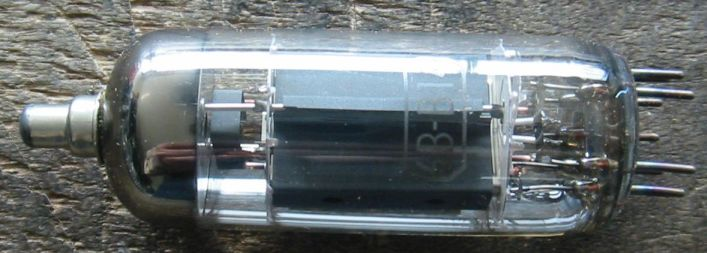
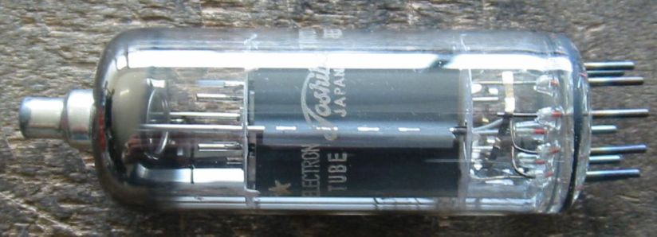
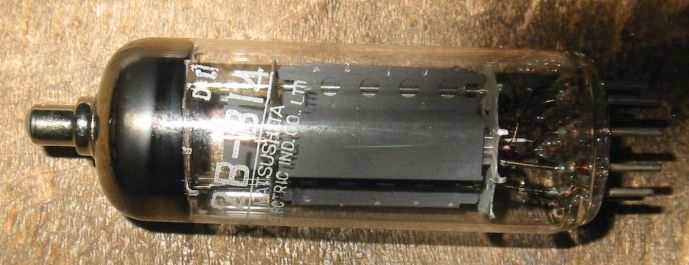
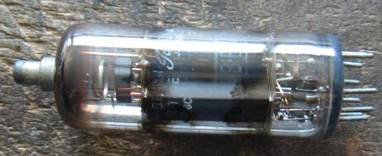

6B-B14などのマグノバー管について
ここには日本独自のマグノバー管を集めてあります。
ヨーロッパ系のマグノバー管は２５E5のところにあります。

12B-B14 Toshiba NOS

12B-B14 MATSUSHITA NOS 国産品には珍しくプリントが斜めになっています。

１２B-B14 Used この球というよりマグノバーの中古管はガラスに黒いシミができていることがあります。
でも問題なく使えます。

TV水平出力管のページに戻る